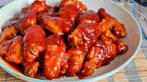

Alitas BBQ
BBQ chicken wings are a classic of American cuisine, a delicacy that never goes out of style and is always well received on any occasion. This recipe combines the crunch of chicken with the smoky sweetness of barbecue sauce, creating a feast of flavor that will delight all diners. Get ready to impress your guests with this easy and delicious recipe!
Preparation time
- Total: Approximately 1 hour
- Preparation: 30 minutes
- Cooking: 30 minutes
Instructions
- Wash the chicken wings under cold water and dry them well with kitchen paper.
- In a large bowl, season the wings with salt, pepper, garlic powder, and onion powder. Make sure you coat all the pieces well with the spices.
- In another bowl, mix the barbecue sauce, honey, soy sauce and olive oil. Combine the ingredients well until you obtain a homogeneous mixture and set aside.
- Pour half of the prepared BBQ sauce over the seasoned chicken wings. Make sure to cover all the pieces with the sauce.
- Cover the bowl with plastic wrap and marinate in the refrigerator for at least 1 hour. If you have more time, marinating overnight will intensify the flavor.
- Preheat the oven to 200°C.
- Place the chicken wings on a baking sheet previously greased or lined with baking paper.
- Bake the wings for 25-30 minutes, turning halfway through, or until golden brown and crispy.
- While the wings are baking, heat the rest of the BBQ sauce in a saucepan over medium heat for a few minutes, stirring occasionally.
- Once the wings are ready, serve them hot with the hot BBQ sauce for dipping.
Ingredients
- 1 kg chicken wings
- Salt & pepper to taste
- 1 teaspoon garlic powder
- 1 teaspoon onion powder
- 1 cup barbecue sauce (you can use store-bought or make homemade)
- 2 tablespoons of honey
- 2 tablespoons soy sauce
- 2 tablespoons olive oil
Nutrition
| Calories | 250-300Kcal |
| Carbs | 5g |
| Protein | 20-25g |
| Fat | 15-20g |